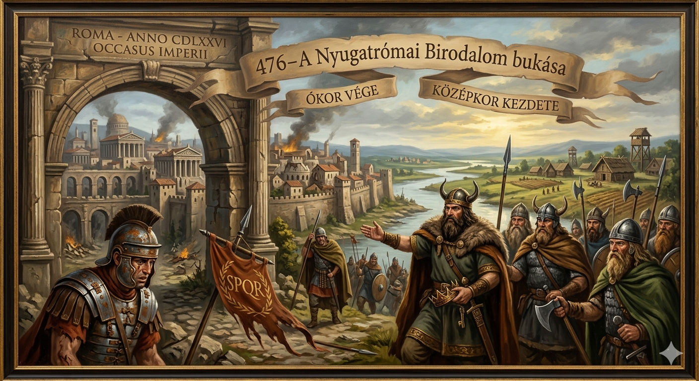
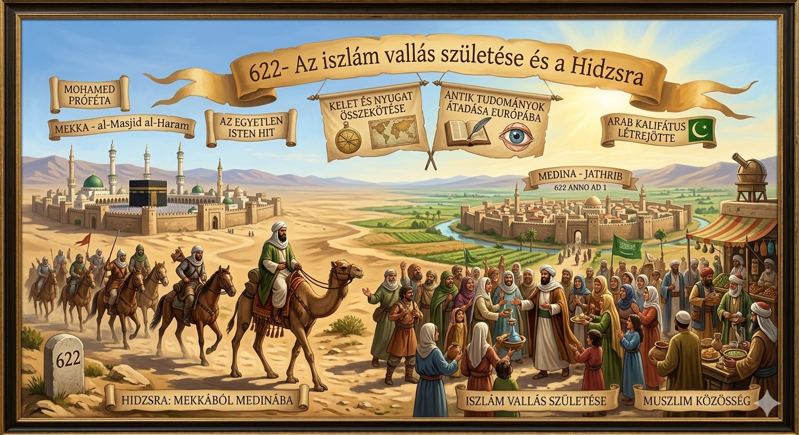
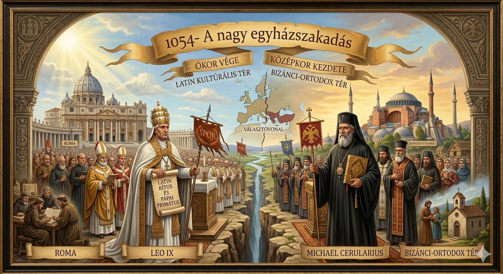
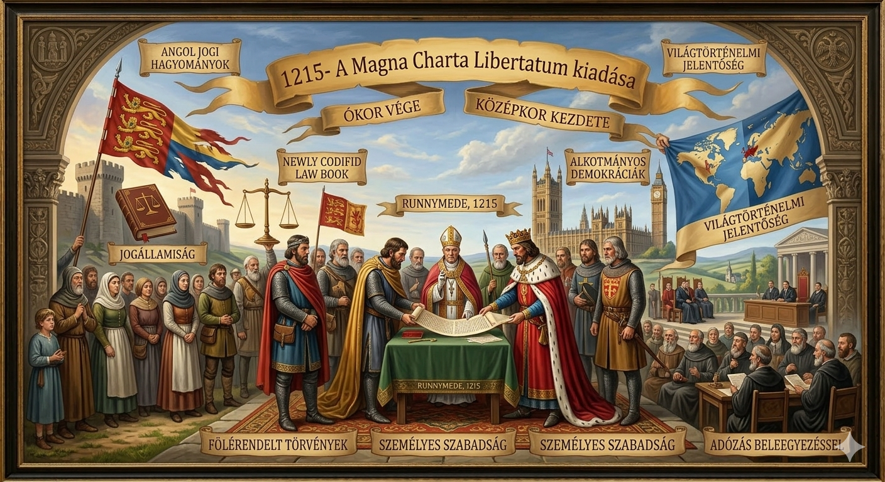
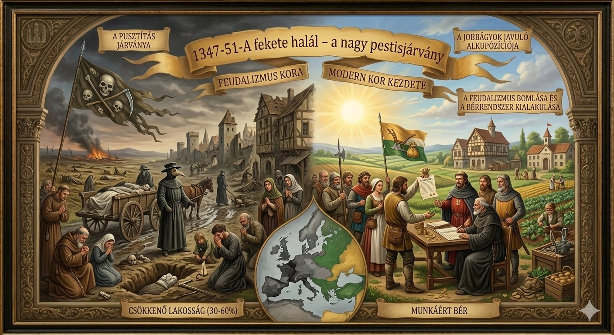
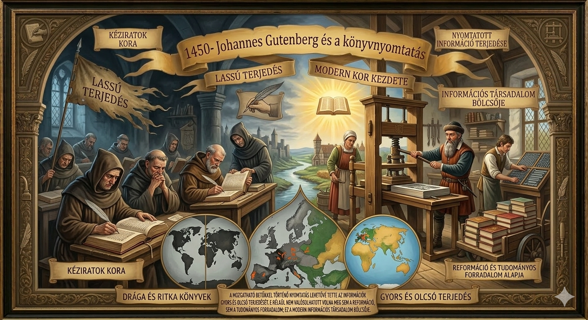
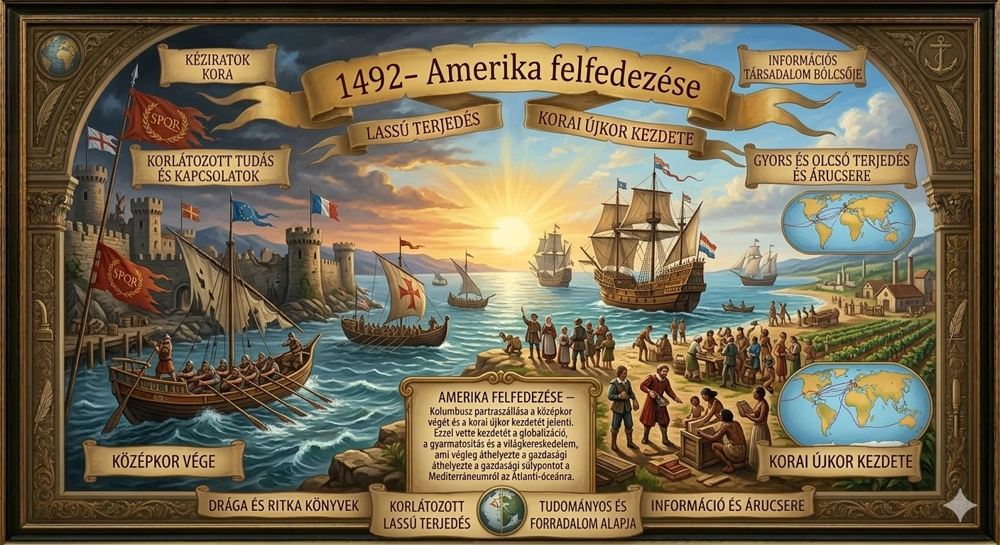

476-A Nyugatrómai Birodalom bukása
Ez az esemény az ókor végét és a középkor kezdetét jelzi. Az egységes birodalom szétesésével megszűnt a központi hatalom Európában, utat engedve a germán királyságoknak és a feudális társadalmi rend kialakulásának.

622- Az iszlám vallás születése és a Hidzsra
Mohamed futása Mekkából Medinába nemcsak egy világvallás felemelkedését jelentette, hanem egy olyan hatalmas Arab Kalifátus létrejöttét is, amely összekötötte Keletet Nyugattal, és közvetítette az antik tudományokat Európa felé.

1054- A nagy egyházszakadás
A kereszténység kettéválása a római katolikus és az ortodox ágra meghatározta Európa kulturális és politikai térképét. Ez a választóvonal (a latin és a görög rítus között) a mai napig érezhető a kontinens keleti és nyugati fele között.

1215- A Magna Charta Libertatum kiadása
Bár "csak" egy angol dokumentum, világtörténelmi jelentősége óriási: ez volt az első alkalom, hogy írásban rögzítették, hogy a törvények a király felett állnak. Ez fektette le a későbbi alkotmányos demokráciák és a jogállamiság alapjait.

1347-51-A fekete halál - a nagy pestisjárvány
A történelem legpusztítóbb járványa megölte Európa lakosságának kb. 30-60%-át. A hatalmas munkaerőhiány miatt a jobbágyok alkupozíciója javult, ami a feudalizmus bomlásához és a bérrendszer kialakulásához vezetett.

1450- Johannes Gutenberg és a könyvnyomtatás
A mozgatható betűkkel történő nyomtatás lehetővé tette az információk gyors és olcsó terjedését. E nélkül nem valósulhatott volna meg sem a reformáció, sem a tudományos forradalom; ez a modern információs társadalom bölcsője.

1492- Amerika felfedezése
Kolumbusz partraszállása a középkor végét és a korai újkor kezdetét jelenti. Ezzel vette kezdetét a globalizáció, a gyarmatosítás és a világkereskedelem, ami végleg áthelyezte a gazdasági súlypontot a Mediterráneumról az Atlanti-óceánra.